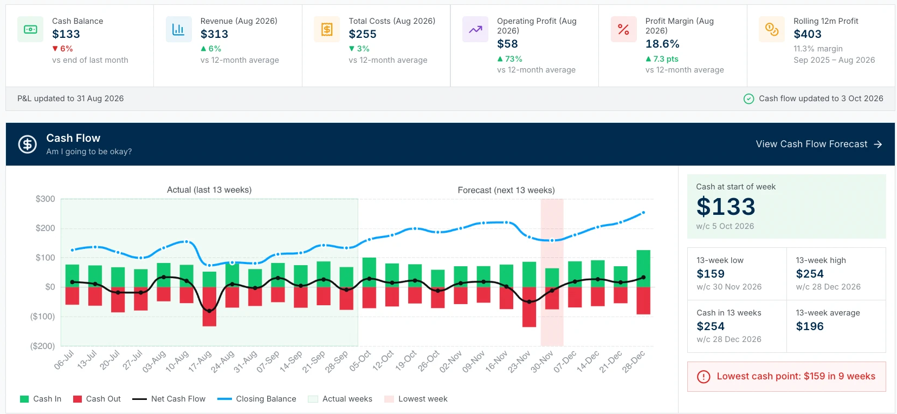
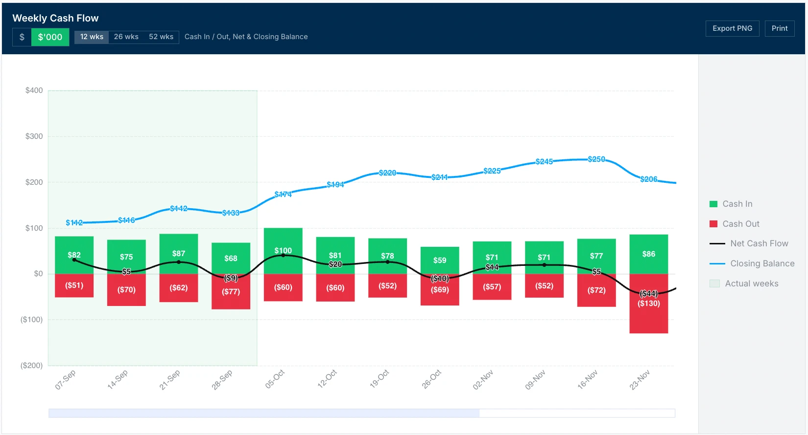
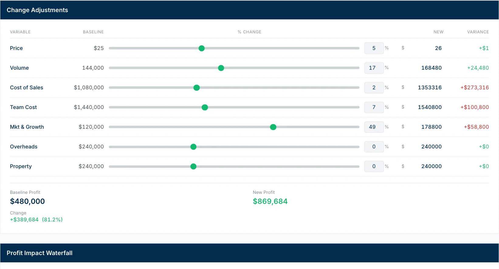

Financial Visibility · Tools + Software
Your Profit & Cash Flow Toolkit
Four tools and one dashboard, all in one login. Set up for you with your real numbers, so you can see what's happening and what's coming.

"Am I going to be okay?" answered on one screen.

"When is my next low point, and how much cash can I actually use?"
Your cash in and cash out week by week, with actuals behind you and a 13-week forecast ahead. Tax bills, wages and big payments show up long before they hit the bank.
You get: no more cash flow rollercoaster. You see the dip coming and act early.

"How did we really go, and where has the profit gone?"
Your profit and loss and what you own and owe, in plain English. Every cost shown as a % of revenue, trends month to month, and where your cash is tied up.
You get: know how you're going every month, not just at year-end.

"What's my next right move to lift profit?"
Your break-even point and seven profit levers: price, volume and five cost areas. Move any lever and see the impact on profit before you commit. A flight simulator for your business.
You get: the one or two things to focus on that will move profit most.

"Where is this business taking me?"
Five years of profit, cash and what you own and owe. See the long-term impact of the decisions you make today, and the business value you're building.
You get: confidence that today's decisions are building the future you want.
Part of your Financial Operating System:
Visibility + Confidence + Rhythm = Profit & Cash Flow Mastery